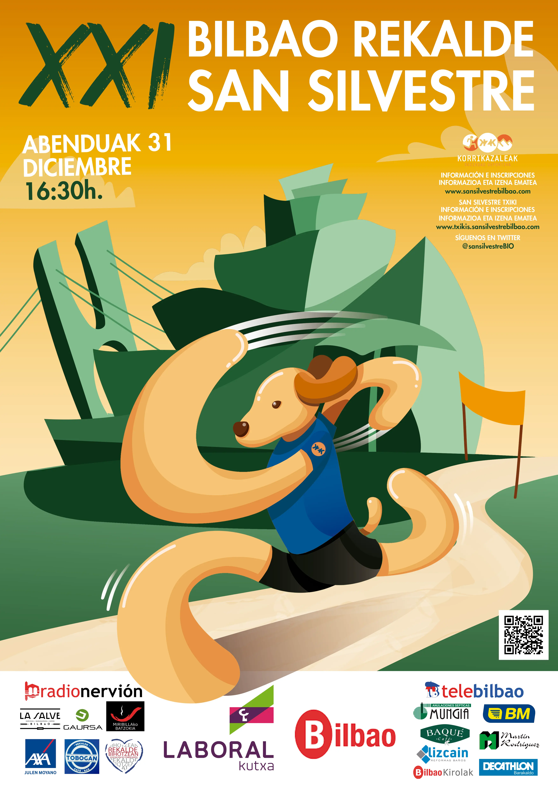
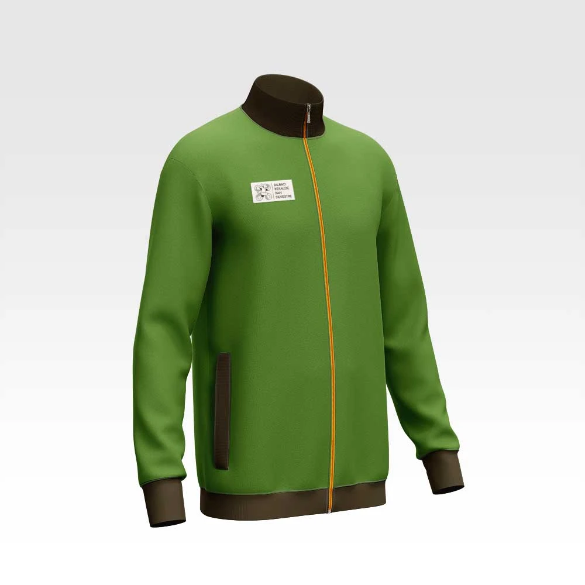
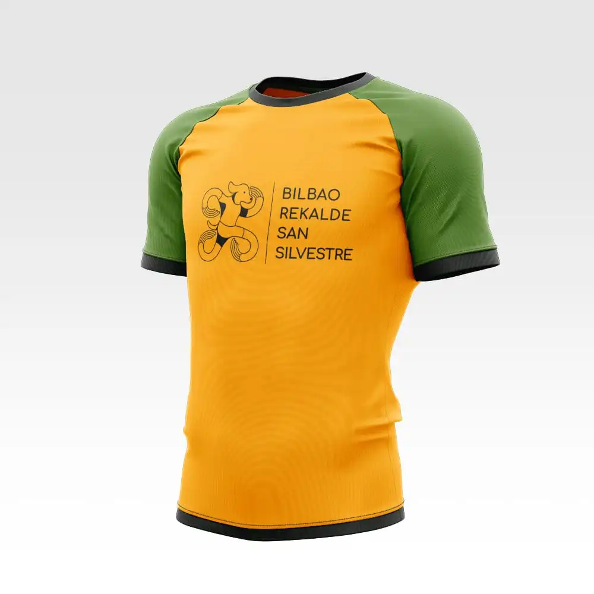
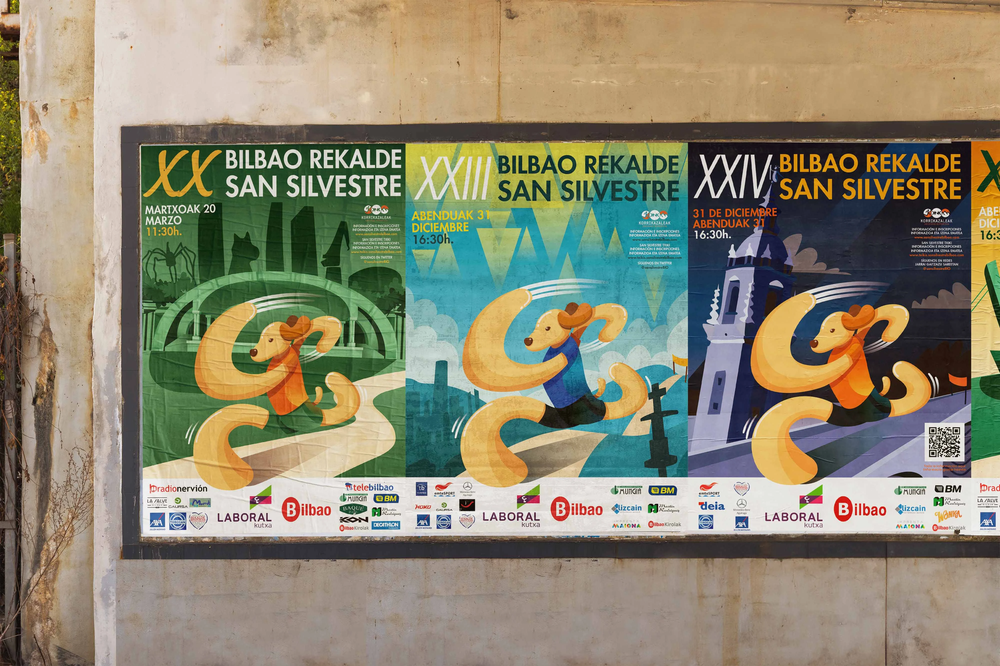
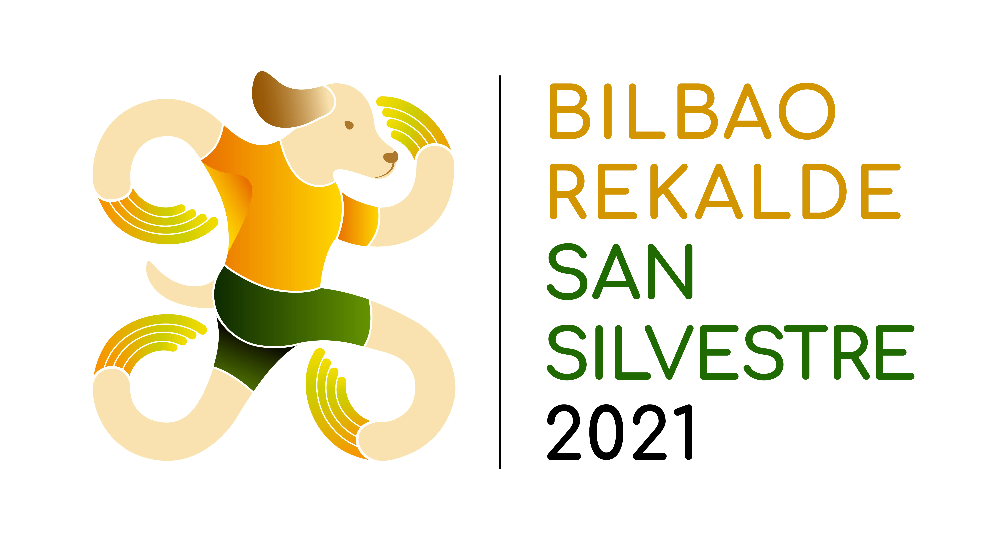
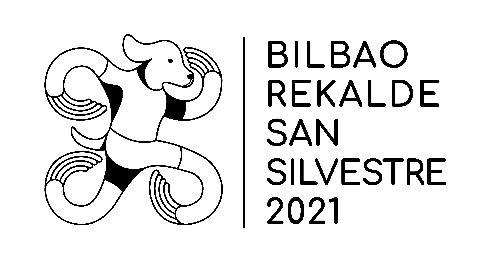

Bilbao Rekalde San Silvestre
¿Se puede estar más orgullosa de haber podido participar en la creación del logo de una de las carreras más importantes de Bilbao? No, no se puede. Y si además incluyo haber creado los carteles de los últimos 5 años ya parece un sueño hecho realidad. El proyecto fue todo un reto ya que venían de no tener logo y la única representación gráfica de la Sansil era un pequeño boceto de un perro de principios de los años 90. Por lo que el can y la baldosa de Bilbao fueron los elementos que debían aparecer sí o sí. Junto a Korrikazaleak -organizadores de la carrera- llegamos a este rebranding más moderno y reconocible.





